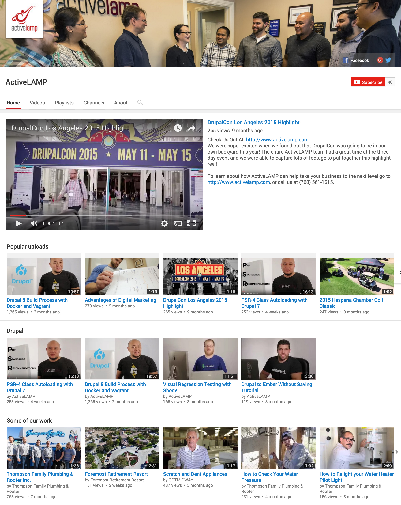
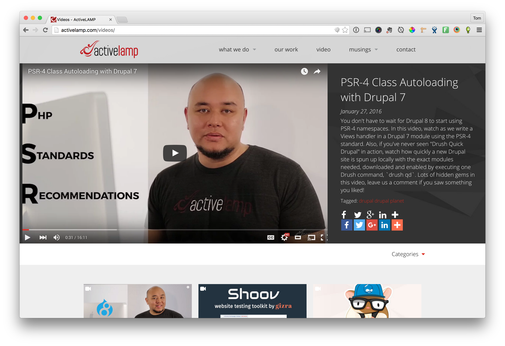

Writing Views Handlers
Presented by Tom Friedhof
Tom Friedhof

- Senior Software Engineer at ActiveLAMP
- @tomfriedhof
- @activelamp
Subscribe to our YouTube Channel
http://youtube.com/activelamp
I won't be talking about how to use Views today.
What I'll be covering today
- How to extend Views with Handlers.
- We are going to look at code.
Encapsulation, Inheritance and Polymorphism using Drupal Entities
Go check it out on our YouTube channel (when it's released).
Lets code a module
mymodule.info
name = My Cool Module
description = Provides an area handler for views
core = 7.x
dependencies[] = views
dependencies[] = xautoload (>= 7.x-5.0)
mymodule.module
/**
* Implements hook_views_api().
*/
function mymodule_views_api() {
return [
'api' => 3
];
}
mymodule.views.inc
/**
* Implements hook_views_data().
*/
function mymodule_views_data() {
return [
'views' => [
'mymodule_area' => [
'title' => t('My Custom Area'),
'help' => t('Adds a custom area handler.'),
'area' => [
'handler' => 'Drupal\mymodule\Views\Handlers\Area\MyCoolHandler'
]
]
]
];
}
Checkout our video on PSR4
Directory structure follows naming convention
mymodule/src/Views/Handlers/Area
namespace Drupal\mymodule\Views\Handlers\Area;
/**
* Defines a new handler class for views.
*/
class MyCoolHandler {
}
That's how you write every type of handler in Views
Time to write a custom field.
We're going to create a psuedo field
'node' => [
'my_custom_field' => [
'title' => t('My Custom Field'),
'help' => t('Showing how to write fields at SandCamp'),
'real field' => 'created',
'field' => [
'handler' => 'Drupal\mymodule\Views\Handlers\Field\MyCustomField'
],
'filter' => [
'handler' => 'Drupal\mymodule\Views\Handlers\Filter\MyCustomFilter'
]
],
]
namespace Drupal\mymodule\Views\Handlers\Field;
class MyCustomField extends \views_handler_field {
function render($values) {
$value = $this->get_value($values);
return date('Y-m-d', $value);
}
}
Custom Filter
function option_definition() {
$options = parent::option_definition();
$options['even_odd'] = array('default' => 'odd');
return $options;
}
function options_form(&$form, &$form_state) {
$form['even_odd'] = [
'#type' => 'radios',
'#title' => t('Even or Odd'),
'#default_value' => $this->options['even_odd'],
'#options' => ['odd' => t('Only odd numbers'), 'even' => t('Just even numbers')],
'#description' => t('Demonstrating how to create your own options form')
];
parent::options_form($form, $form_state);
}
function admin_summary() {
return $this->options['even_odd'] == 'even' ? t('Just even numbers') : t('Just odd numbers');
}
Change the query
mymodule/src/Views/Handlers/MyCustomFilter.php
function query() {
$this->ensure_my_table();
$operator = $this->options['even_odd'] == 'even' ? '=' : '>';
$this->query->add_where_expression($this->options['group'], "($this->table_alias.$this->real_field % 2) $operator 0");
}
Other handlers you can extend
- views_sort_handlers
- views_argument_handlers
- views_relationship_handlers
Subscribe to our YouTube Channel
http://youtube.com/activelamp
Questions?
Send me an email:
tom@activelamp.comor in IRC #drupal-la